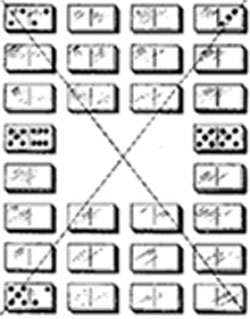

Ray Nimmo - Internet Programming Coursework
The Magic Square
Magic Square Javadoc
|  |
How to Play:
Dominoes may be placed anywhere on the board. They may be taken from the
stockpile and placed at the side until you think you have found the correct position.
The white answer areas will turn green if the correct line score of 21 is reached. They will
turn red if the line scores exceed 21. |
Ray Nimmo © 2006